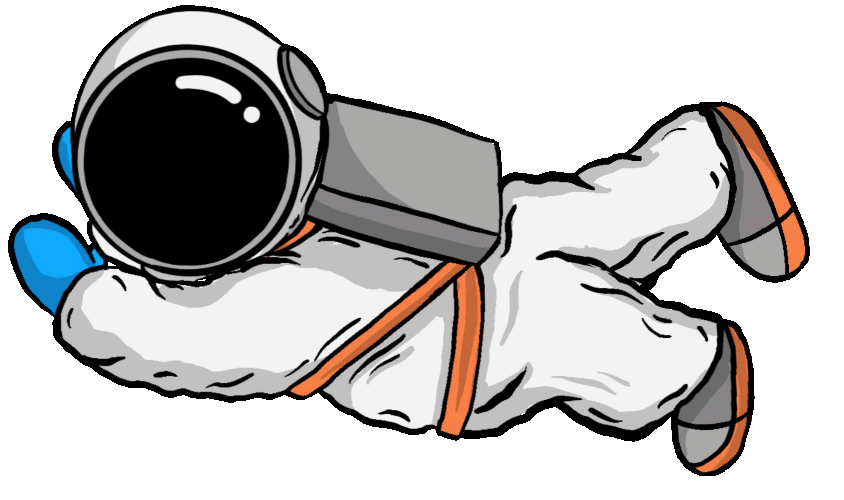
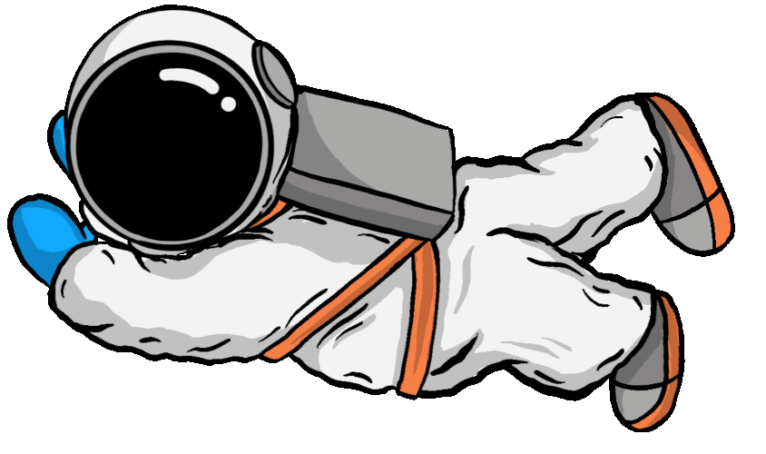

Hmm?
Jeg må hellere holde godt fast!
Gad vide, hvad Saturns ringe er lavet af?
Prøv at trykke på ringene for at se.
Saturn
Saturn er den sjette planet fra solen i vores solsystem!
Vidste du godt at man ikke kan stå på Saturn, fordi det er en gas planet?